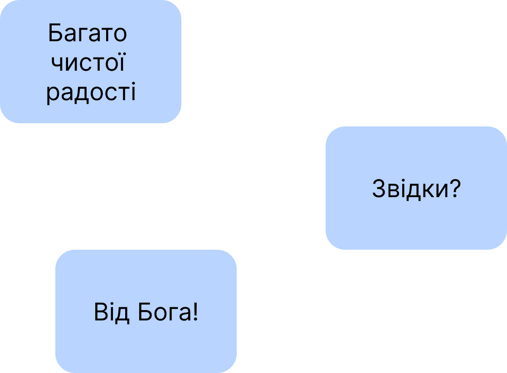

Слава Ісусу Христу!
☀️
Оскільки у праці, опублікованій за посиланням:
https://oleksandr-zhabenko.github.io/uk/commentaries/02082025.html
а ще раніше в інших, опублікованих за посиланнями:
https://churchandsociety.org.ua/pdf/projects/zbirnyk.pdf
https://oleksandr-zhabenko.github.io/uk/commentaries/17082024.html
https://oleksandr-zhabenko.github.io/uk/commentaries/12112025.html
https://oleksandr-zhabenko.github.io/uk/commentaries/27112024.html
написано, що вживання прийменників має важливе значення для правильного розуміння важливих і актуальних питань, зокрема питання влади, то пишу коментарі щодо вживання саме цих прийменників. Як порада щодо читання написаного — можна читати вірш у перекладі чи/та оригіналі (хто має таку змогу), а тоді відповідний коментар щодо прийменників тут. Далі потрібно зрозуміти, якої частини вірша стосується коментар, а також обдумати, що суттєве для розуміння він стверджує — чи рідше — заперечує. Таке вдумливе читання допомагає поглибити розуміння і береже від згаданих помилок.
Важливими творами, які проливають більше світла на цю тему також є наступні:
https://oleksandr-zhabenko.github.io/uk/commentaries/28052026.html
https://oleksandr-zhabenko.github.io/uk/commentaries/16082026.html
Підготував покращений варіант мого дослідження, презентація якого доступна за посиланням:
https://www.facebook.com/Oleksandr.S.Zhabenko/posts/2447150899034358
https://oleksandr-zhabenko.github.io/uk/commentaries/vystup-2025-hypo-genitive-Romans-XIII_1.pdf
Матеріал дослідження наразі готується до публікації. Маю надію, якщо дасть Бог, пізніше представити повніші результати після виходу публікації.
Сам список посилань щодо прийменників буду оновлювати за посиланнями:
https://oleksandr-zhabenko.github.io/uk/commentaries/02082025.html
https://oleksandr-zhabenko.github.io/uk/commentaries/Pryjmennyky.html
крайній — раз або двічі на місяць, щоб зберігати актуальною версію тексту і надалі.
Згадки Стронга (прим. за Стронгом) у перекладі оригінального тексту означають, що слово узято зі словника Стронга, а конкретне значення обране після перекладу та коментаря Google Gemini.
Рання:
Про читання з Євангелія дивіться за посиланнями:
https://oleksandr-zhabenko.github.io/uk/commentaries/04052025.html
https://oleksandr-zhabenko.github.io/uk/commentaries/30042023.html
Літургія:
Ефесян II, 15 — 'ἐν τῇ σαρκὶ αὐτοῦ' - 'en te sarki autou' - у плоті Своїй; плоттю Своєю
. Можливі обидва варіанти перекладу, перший вказує на немочі людської природи як ті, що беруть участь у справі спасіння людей, а другий — на те, що самі немочі через те, що були прийняті Сином Божим, були вилікувані. 'ἐν δόγμασιν' - 'en dogmasin' - у постановах
. 'ἐν αὐτῷ εἰς ἕνα καινὸν ἄνθρωπον' - 'en auto eis ena kainon anthropon' - у Собі в одну нову людину; Собою в одну нову людину
. Можливі обидва варіанти перекладу, обидва підкреслюють, що Син Божий творить у спасінні оновлену людину — Свою людську природу, а через неї — оновлює інших людей.
Ефесян II, 16 — 'ἐν ἑνὶ σώματι' - 'en heni somati' - в одному тілі; в єдиному тілі
. Йдеться про Церкву як Тіло Христове. 'ἐν αὐτῷ' - 'en auto' - ним; у ньому
. Можливі обидва варіанти перекладу, обидва підкреслюють значення хреста Господнього як знаряддя спасіння.
Ефесян II, 18 — 'ἐν ἑνὶ πνεύματι' - 'en heni pneumati' - в Одному Дусі; у Єдиному Дусі; Одним Духом; Єдиним Духом
. Можливі усі варіанти перекладу, перші два вказують на Святого Духа як на Того, Хто супроводжує до Отця, а інші два — що Отець веде Святим Духом до Себе.
Ефесян II, 21, 22 — 'ἐν ᾧ' — 'en ho' - у Якому
. 'εἰς ναὸν ἅγιον ἐν κυρίῳ' - 'eis naon hagion en kyrio' - у святий храм у Господі
. Прийменник 'eis' вказує на рух і розвиток — куди.
Ефесян II, 22 — 'εἰς κατοικητήριον τοῦ θεοῦ ἐν πνεύματι' — 'eis katoiketerion tou theou en pneumati' - в оселю Божу у Дусі (Духом)
.
У цих віршах (14-18 ) Христос названий нашим Миром
. Найперше Павло свідчить, що Христос приніс спасіння усім людям, не лише ізраїльтянам за тілом, але Своїми Стражданнями, Смертю та Воскресінням примирив з Богом людей.
За посиланнями:
https://oleksandr-zhabenko.github.io/uk/vidnovlennya-Petra.html
https://oleksandr-zhabenko.github.io/uk/commentaries/15072023.html
https://oleksandr-zhabenko.github.io/uk/commentaries/16082026.html
https://oleksandr-zhabenko.github.io/uk/commentaries/18082026.html
більше написано про страждання та відкуплення у Христі, а тут говориться про мир, який люди отримали у Христі, Який смиренно став людиною, зійшов аж до Аду, щоб спасти людей.
Христос не лише за Ізраїль постраждав, але за всіх людей, бо розп’яття не було карою у Законі — Христос добровільно прийняв для спасіння людей такі страждання — розп’яття — які не передбачені Законом Мойсея як покарання за гріхи, але які використовували язичники. Христос зробив це, щоб спасти усіх.
Якщо бажаєте знати більше, напишіть мені, будь ласка.
Більше про читання з Апостола дивіться за посиланнями:
https://oleksandr-zhabenko.github.io/uk/commentaries/23112025.html
https://oleksandr-zhabenko.github.io/uk/commentaries/08122024.html
https://oleksandr-zhabenko.github.io/uk/commentaries/19112023.html
Луки VIII, 41 — 'παρὰ τοὺς πόδας' - 'para tous podas' - до близькості з ногами; ближче до ніг
. Прийменник 'para' тут з аккузативом. За смислом другий варіант, тобто Яір намагався припасти до ніг Ісуса ближче, щоб Той обов'язково звернув увагу на його прохання. 'εἰς τὸν οἶκον' - 'eis ton oikon' - у дім
. Куди.
Луки VIII, 42 — 'ἐν δὲ τῷ ὑπάγειν' - 'en de to hypagein' - коли ж ішов
. Тобто під час ходи.
Луки VIII, 43 — 'ἐν ῥύσει αἵματος' - 'en rhysei haimatos' - у кровотечі; кровотечею
. Тобто її хвороба була станом, у якому вона перебувала. 'ἀπὸ ἐτῶν δώδεκα' - 'apo eton dodeka' - дванадцять років
. Прийменник 'apo' вказує, починаючи з якого часу в минулому, це було. Сталий спосіб його вживання. 'ἀπ’ οὐδενὸς' - 'ap oudenos' - від нікого
. Не могла отримати зцілення чи лікування від будь-кого, до кого раніше зверталася. Прийменник 'apo' в його формі перед наступним голосним вказує, що її цікавило саме зцілення, Також що джерелом лікування є не сам лікар, але Бог.
Луки VIII, 46 — 'ἀπ’ ἐμοῦ' - 'ap emou' - від Мене; з Мене
. Прийменник 'apo' в його формі перед наступним голосним підкреслює, що сила, за словами Ісуса, вийшла поза Його тіло, очевидно, у напрямку жінки для її зцілення.
Луки VIII, 48 — 'εἰς εἰρήνην' - 'eis eirenen' - у мир
. Буквально — мир як пункт призначення і руху. Жінка послідовно виявила правильну і блаженну поведінку, ставши прикладом того, як шукати мир в Бозі.
Луки VIII, 49 — 'παρὰ τοῦ ἀρχισυναγώγου' - 'para tou arkhisynagogou' - від (також поряд) старшого синагоги
. Прийменник 'para' з родовим відмінком. Така конструкція вживається щодо ісходження Святого Духа від Отця, щодо Предвічної Ради Пресвятої Трійці, щодо Божого задуму щодо спасіння людей, також щод людської природи Ісуса Христа. Дивіться за посиланнями:
https://oleksandr-zhabenko.github.io/uk/commentaries/Pryjmennyky.html
https://oleksandr-zhabenko.github.io/uk/commentaries/02082025.html
https://oleksandr-zhabenko.github.io/uk/commentaries/vystup-2025-hypo-genitive-Romans-XIII_1.pdf
Тут вказує на те, що та людина була кимось, хто був часто разом з начальником синагоги, хтось наближений.
Луки VIII, 51 — 'εἰς τὴν οἰκίαν' - 'eis ten oikian' - у дім
. Куди.
Більше про паралельні місця в інших синоптичних Євангеліях дивіться за посиланнями, зокрема за першим детальніше розібрана участь Святого Духа у подіях з кровотечивою жінкою:
https://oleksandr-zhabenko.github.io/uk/commentaries/07092026.html
https://oleksandr-zhabenko.github.io/uk/commentaries/04092026.html
https://oleksandr-zhabenko.github.io/uk/commentaries/15092025.html
https://oleksandr-zhabenko.github.io/uk/commentaries/12092025.html
https://oleksandr-zhabenko.github.io/uk/commentaries/19072025.html
https://oleksandr-zhabenko.github.io/uk/commentaries/03082024.html
https://oleksandr-zhabenko.github.io/uk/commentaries/15072023.html
Більше про читання з Євангелія дивіться за посиланнями:
https://oleksandr-zhabenko.github.io/uk/commentaries/23112025.html
https://oleksandr-zhabenko.github.io/uk/commentaries/03112024.html
https://oleksandr-zhabenko.github.io/uk/commentaries/05102023.html
Преподобного Паїсія Величковського:
Про часте читання з Апостола дивіться за посиланнями:
https://oleksandr-zhabenko.github.io/uk/commentaries/07072026.html
https://oleksandr-zhabenko.github.io/uk/commentaries/29122024.html
Про читання з Євангелія дивіться за посиланнями:
https://oleksandr-zhabenko.github.io/uk/commentaries/03072025.html
https://oleksandr-zhabenko.github.io/uk/BesidaNaSlovaCHrystaStrakh.html
https://oleksandr-zhabenko.github.io/uk/commentaries/08022024.html
https://www.facebook.com/Oleksandr.S.Zhabenko/posts/
https://oleksandr-zhabenko.github.io/uk/commentaries/29062023.html
https://oleksandr-zhabenko.github.io/uk/commentaries/18072024.html
Слава Тобі, Боже наш, слава Тобі!